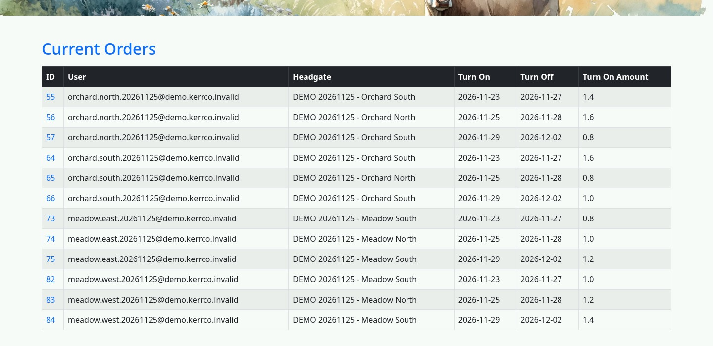

Built by KERRCO / IDWX
Weather analysis.
Forecasts, local weather history, and growing-season data in one place. Explore the graph and inspect the records behind it.
Explore the working applicationSoftware & automation / Twin Falls & the Magic Valley
I build practical software for small businesses tired of spreadsheets, repetitive paperwork, and disconnected systems. The goal is simple: less administrative work and more time running your business.
Free initial conversation. No obligation.
Most projects are flat fee. We agree on the scope and price before work begins.
I’m Samuel Kerr. 25 years developing software, including ten years at Stanford Linear Accelerator Center and later work at Fortinet. I also run a farm and previously operated a framing company in the Magic Valley. I understand the work of running a business as well as building its software.
Built by KERRCO / IDWX
Forecasts, local weather history, and growing-season data in one place. Explore the graph and inspect the records behind it.
Explore the working application
Built by KERRCO / Irrigation operations
Delivery requests, order status, and canal records in one application. See the scheduling screens and flow history using fictional test records.
See the application screens
Built by KERRCO / ActiveFundPerf
Holdings, trades, distributions, and performance records brought into one research view, with supporting sources and visible gaps in the data.
Explore the research dashboardDevelopment / Automation / Advice
Repeated data entry, scattered job notes, and weekly reports assembled by hand are all useful places to start.
Applications
Fix a frustrating application, add a missing feature, or build a focused tool. Give staff a better way to handle the job instead of another workaround.
Software developmentAutomation
Connect forms, spreadsheets, and services so information can move between them. Reduce the copying, routine updates, and report preparation you keep doing by hand.
Automation & integrationsConsulting
Work out what your current tools can do, what needs to change, and whether a new build is worth it. Get help with a software decision before committing to a project.
Software consultationA possible first project
Calls, texts, photos, and visit notes can be hard to keep together. Follow a fictional contractor’s request through a possible tool that puts the information and next action in one place.
See the contractor exampleFree initial conversation
Show me one task you keep doing by hand or a piece of software that slows you down. You don’t need a technical brief to start.
Tell me what’s taking your timeFree initial conversation. No obligation. Any paid work is scoped and priced before it begins.Walk through a real task, the tools you use, and the steps that keep repeating.
Most projects are flat fee, with scope and price agreed up front. A smaller investigation or prototype can come first when needed.
Use the agreed solution with real tasks, compare the effort involved, and hand it over with clear hosting and support arrangements.